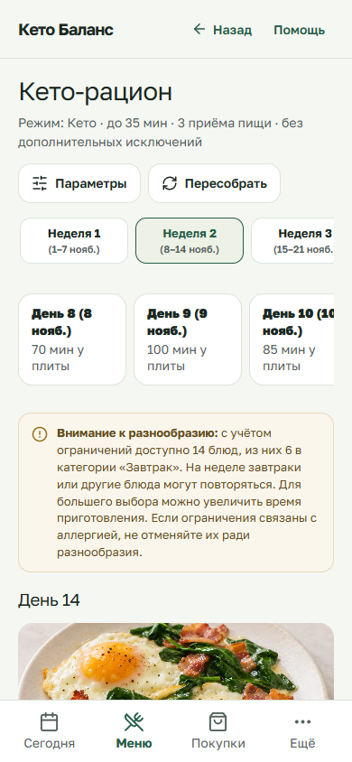
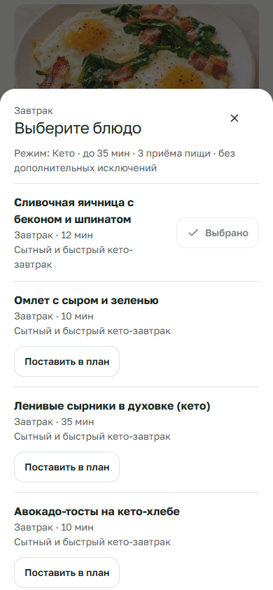
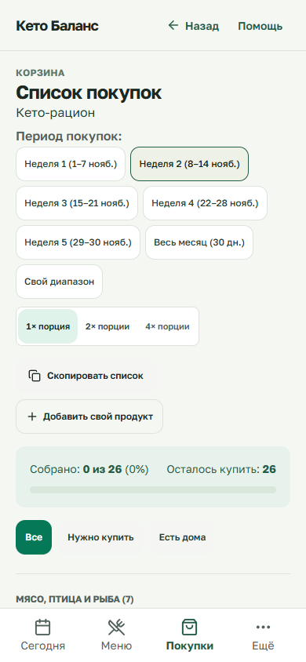
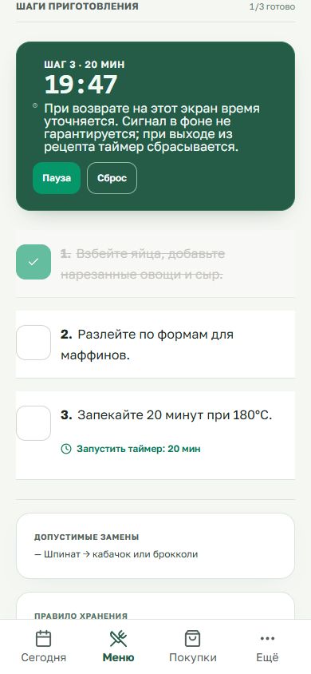

В параметрах выберите месяц, подход и ограничения. Составьте меню.

Нажмите «Заменить», выберите блюдо и затем «Поставить в план».

Откройте «Покупки» и выберите неделю. После замены обновите корзину.

Откройте рецепт, выберите порции, отмечайте шаги и запускайте таймер.
